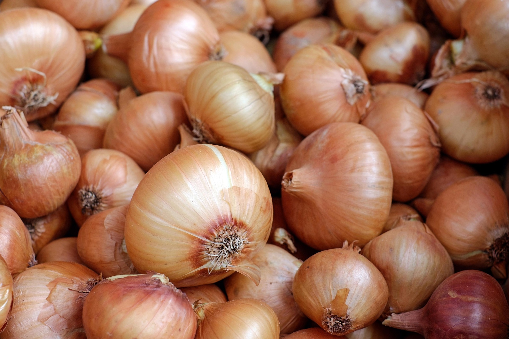
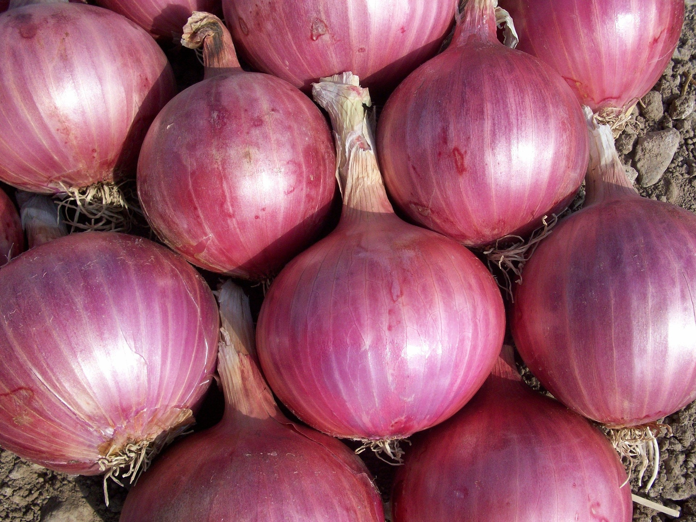
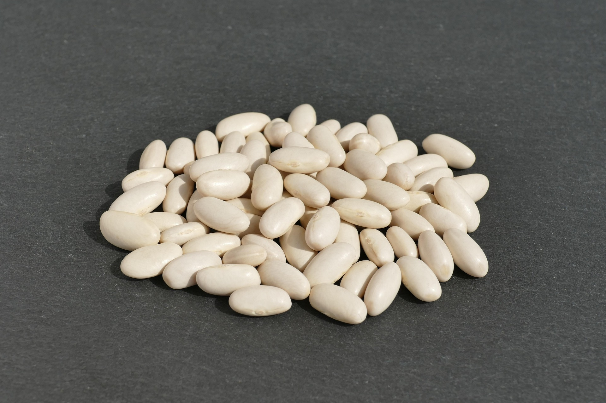
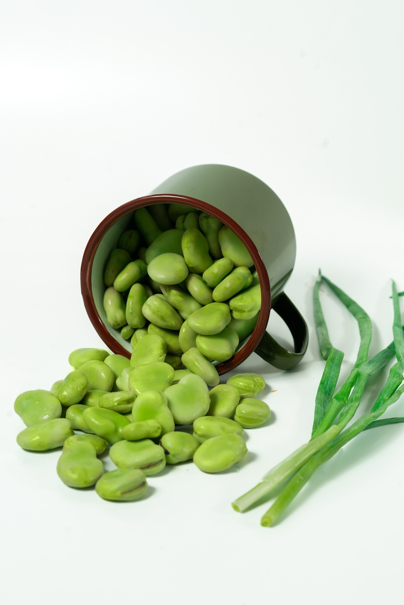
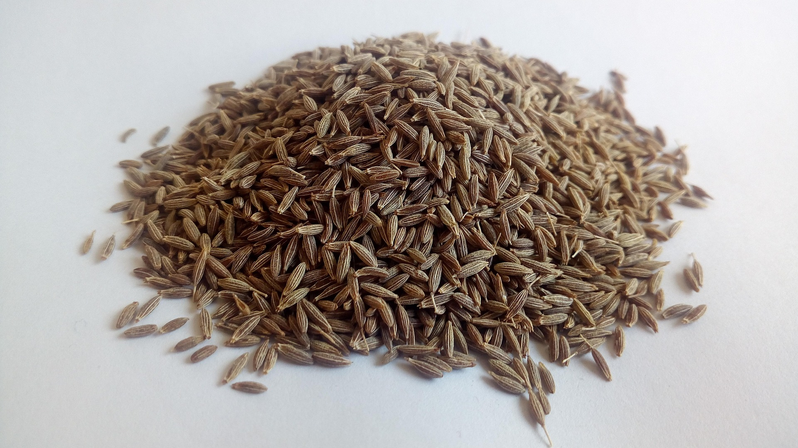
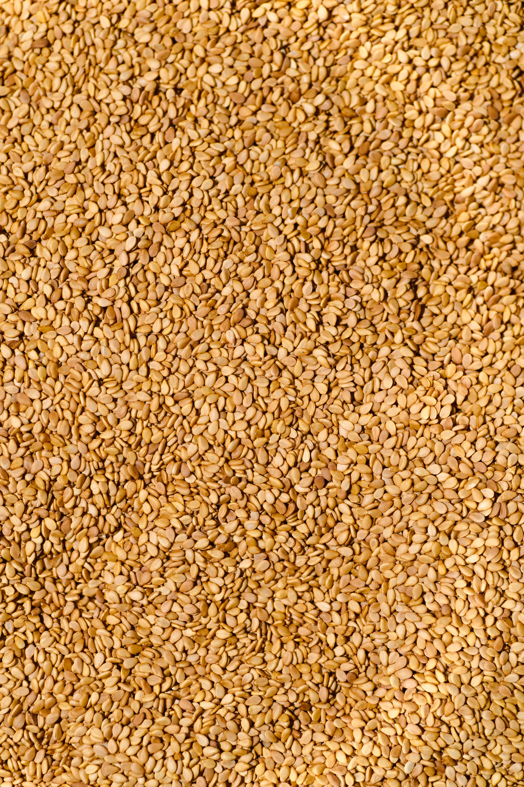

Fresh Fruits
 Photo by Photographer Name
Photo by Photographer Name
Eureka Lemon
Fresh FruitOur fresh Eureka lemons are the gold standard of citrus. Characterized by their vibrant yellow skin, pronounced nipple at the end, and brilliant aroma, Eureka lemons offer a high juice content with a bold, crisp acidity. Whether you are zesting for baked goods or squeezing fresh juice into cocktails and dressings, Eureka delivers consistent quality and rich, punchy flavor.
- Season: October – April
- Packaging: 15kg Plastic or Open-top Cartons
- Container Load: 25 Tons
 Photo by Photographer Name
Photo by Photographer Name
Sweet Potato
Tuberous RootGrown in the ideal climate and rich soil along the Nile Delta, Egyptian sweet potatoes are globally prized for their high sugar content, deep orange flesh, and flawless appearance. Carefully harvested and professionally cured to lock in natural sweetness and enhance shelf life, our sweet potatoes deliver excellent texture whether baked, roasted, or processed. They are an exceptional choice for both fresh retail and commercial food production.
- Season: July - December / April
- Types: Beauregard, Bellevue
- Skin Color: Copper / Red
- Pulp Color: Orange / Yellow / White
- Class: 1 & 2
- Size: S / M / L1 / L2 / XL
- Packaging: 10kg / 15kg Cartons
- Container Load: 24 Tons (Reefer 40ft)
 Photo by Photographer Name
Photo by Photographer Name
Fresh Strawberry
Aggregate Accessory FruitGrown in the rich, fertile soils along the Nile Delta, Egyptian strawberries are world-renowned for their vibrant ruby color, balanced sweetness, and exceptional aroma. Harvested during the winter months when global supply is scarce, our fresh strawberries are carefully hand-picked, sorted, and packed to ensure optimum firmness and peak flavor upon arrival. Perfect for fresh desserts, snacking, beverages, or culinary garnishes.
- Season: November – April
- Packaging: 15kg Telescopic / Open-top Cartons
- Container Load: 24 Tons (Reefer 40ft)
Fresh Vegetables

Photo by Photographer NameGolden & Red Onions
Fresh VegetablesProperly cured bulbs with thick dry skins engineered for long-distance export shipping and extended shelf life.
- Season: April – August
- Packaging: 10kg / 25kg Mesh Bags
- Container Load: 25 – 27 Tons

Photo by Photographer NameGolden & Red Onions
Fresh VegetablesProperly cured bulbs with thick dry skins engineered for long-distance export shipping and extended shelf life.
- Season: April – August
- Packaging: 10kg / 25kg Mesh Bags
- Container Load: 25 – 27 Tons
 Photo by Photographer Name
Photo by Photographer Name
Fresh & Cured Garlic
Fresh VegetablesWhite and purple garlic varieties with firm bulbs, strong aroma, and strict export grading.
- Season: February – May
- Packaging: 5kg / 10kg Cartons or Mesh Bags
- Container Load: 24 Tons
Dried Beans,seeds & Spices

Photo by Photographer NameWhite Kidney Beans (Cannellini)
Dried PulsesPremium, machine-cleaned white kidney beans featuring uniform size, smooth texture, and bright color. High in fiber and protein, ideal for retail packing, dry blending, and canned food production.
- Season: Year-Round
- Packaging: 25kg / 50kg PP Bags
- Container Load: 24 – 26 Tons
 Photo by Photographer Name
Photo by Photographer Name
Cowpeas (Black-Eyed Peas)
Dried PulsesSourced from top agricultural yields, our dried cowpeas are thoroughly sorted and polished to ensure clean, high-grade seeds with consistent eye spots and excellent cooking properties.
- Season: Year-Round
- Packaging: 25kg / 50kg PP Bags
- Container Load: 24 – 25 Tons

Photo by Shameel MukkathEgyptian Fava Beans
Dried PulsesHigh-protein, carefully machine-sorted dry fava beans processed to strict purity standards for international food distribution and culinary use.
- Season: Year-Round
- Packaging: 25kg / 50kg Woven Polypropylene Bags
- Container Load: 25 Tons

Photo by Photographer NameEgyptian Whole Cumin Seeds
Aromatic SpicesSun-dried, machine-cleaned aromatic cumin seeds known for their high essential oil content, intense warm aroma, and rich earthy flavor profile. Processed under strict hygienic standards for culinary and commercial spice extract production.
- Purity: 99% - 99.5% Machine Cleaned
- Moisture: 8% Max
- Packaging: 25kg / 50kg Paper or Polypropylene Bags
- Container Load: 18 – 20 Tons (20ft Container)

Photo by AmatussamitaheraEgyptian Super Libb (Roasted Seeds)
Seeds & SnacksPremium Egyptian super seeds (watermelon seeds), professionally cleaned, sized, and prepared for export. Renowned across international markets for their rich taste, high nutritional value, and uniform size quality.
- Purity: 99% Machine Cleaned
- Moisture: 7% Max
- Packaging: 25kg / 50kg Polypropylene Bags
- Container Load: 18 – 20 Tons (20ft Container)